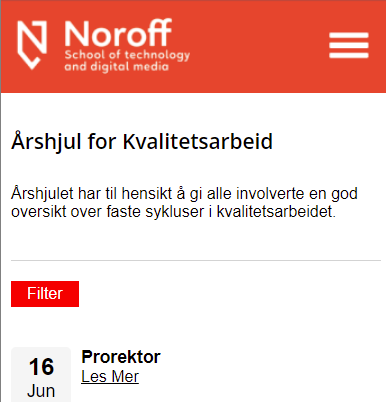
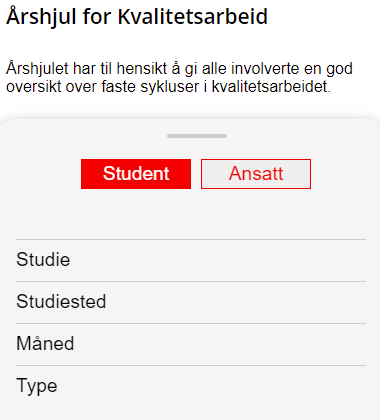
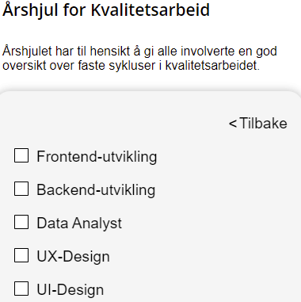
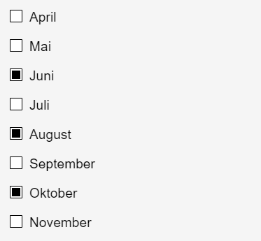
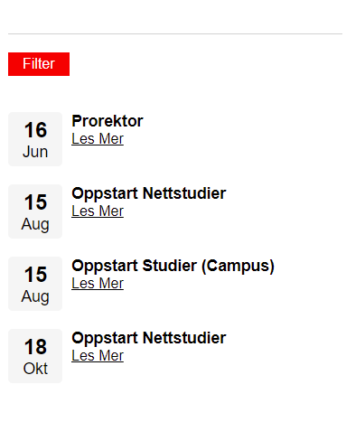

ÅRSHJUL
Årshjulet var en oppgave vi fikk i hovedsak for å designe, men ble også lagt til at vi skulle kode den.
Dette var en gruppeoppgave, der jeg jobbet med en annen student.
Oppgaven gikk ut på å lage et årshjul/kalender for kvalitetssiden til Noroff.
Dette var en gruppeoppgave, der jeg jobbet med en annen student.
Oppgaven gikk ut på å lage et årshjul/kalender for kvalitetssiden til Noroff.

PROSESSEN
Prosessen på designet var veldig fin ettersom vi hadde hatt flere uker på å komme fram til design. Så her var det bare kodingen igjen. Som gjorde det veldig mye lettere.
Vi jobbet som sagt to sammen, det ble en del tull med pushing og pulling i githubdesktop. Men vi kom oss gjennom det.
Vi jobbet som sagt to sammen, det ble en del tull med pushing og pulling i githubdesktop. Men vi kom oss gjennom det.

TEKNOLOGI
I denne oppgaven skulle vi bruke HTML, CSS og Javascript. Så det var altså det vi brukte, hoved fokuset i oppgaven var på filtrering.
På bildet her ser du hvordan vi hadde designet det. Her hadde vi kodet hver checkbox til å bruke en filter funksjon.
På bildet her ser du hvordan vi hadde designet det. Her hadde vi kodet hver checkbox til å bruke en filter funksjon.


LÆRING
Denne oppgaven gjorde at jeg lærte meg å lage en filtreringsfunksjon for både tekst og dato.
I denne oppgaven var vi ganske så fornøyde med resultatet vårt. Det eneste som kunne vært endret på er tiden vi fikk på å produsere det. Hadde vi hatt mer tid hadde vi fått til enda mer, men vi er fornøyde med det vi har gjort.
Bildene som ligger ved viser til filtrering av måneder. og viser at når Juni, August og Oktober er huket av. Så vises kun de.
I denne oppgaven var vi ganske så fornøyde med resultatet vårt. Det eneste som kunne vært endret på er tiden vi fikk på å produsere det. Hadde vi hatt mer tid hadde vi fått til enda mer, men vi er fornøyde med det vi har gjort.
Bildene som ligger ved viser til filtrering av måneder. og viser at når Juni, August og Oktober er huket av. Så vises kun de.